Aplicación de gestión de la sección · CEFOT-2 · BAL
Perfiles
Jefe de sección (I) · Jefe de pelotón (II) · Capitán de compañía (III) · Jefe de estudios (IV)
Dirección
https://cefot.up.railway.app
Versión
Todas las capturas de este manual se han hecho con datos ficticios (nombres, DNI y teléfonos inventados). La aplicación maneja datos personales y disciplinarios: no compartas tu usuario ni tu contraseña y cierra la sesión al terminar, sobre todo en equipos compartidos.
Introducción y acceso
La aplicación registra el roster de la sección, rebajes, sanciones, refuerzos, actividades y horas impartidas. Todos los datos se guardan en el servidor: cada usuario ve siempre la información actualizada, entre desde el ordenador, la tablet o el móvil.
Perfil
Qué puede hacer
Pantalla
Jefe de sección
Todo lo de su sección: roster, rebajes, sanciones, refuerzos, actividades, consultas, notas, horas UA, programas semanales y pérdida de horas, alta de jefes de pelotón y cierre de curso.
admin.html
Jefe de pelotón
Dar de alta partes (sanciones y amonestaciones). Con permiso del jefe de sección: fotos, ficha, adjuntos y consulta de rebajes/refuerzos.
instructor.html
Capitán de compañía
Entra en cualquiera de las secciones de su compañía y trabaja en ella como su jefe de sección, salvo roster, usuarios y cierre de curso.
capitan.html
Jefe de estudios
Consultar estadísticas agregadas de todas las secciones, sin datos personales.
estudios.html
Súper Administrador
Crea secciones, capitanes y jefes de estudios; informes y cambio de curso.
superadmin.html
Entrar
Abre https://cefot.up.railway.app y pulsa Entrar.
Escribe tu Usuario y tu Contraseña. El usuario te lo da quien te dio de alta (puede ser un DNI o un identificador como PELOTON1).
Pulsa Entrar. La aplicación te lleva sola a la pantalla de tu perfil.
Salir
Pulsa Cerrar sesión (arriba a la derecha). La sesión caduca sola a las 12 horas.
Contraseñas. El sistema no guarda las contraseñas de forma legible, así que nadie puede consultarlas. Si un jefe de pelotón olvida la suya, el jefe de sección le asigna una nueva (apartado ). Si la olvida un jefe de sección, la cambia el Súper Administrador.
Tras cinco intentos fallidos seguidos, el acceso se bloquea unos segundos antes de permitir otro intento.
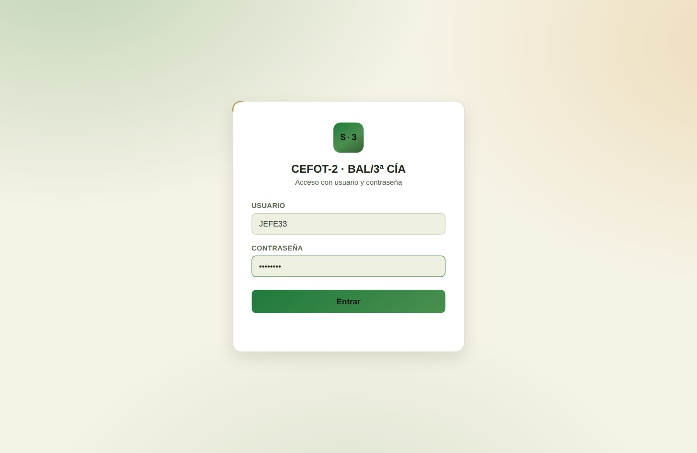
Pantalla de acceso.
PARTE I · JEFE DE SECCIÓN
Pantalla principal y avisos
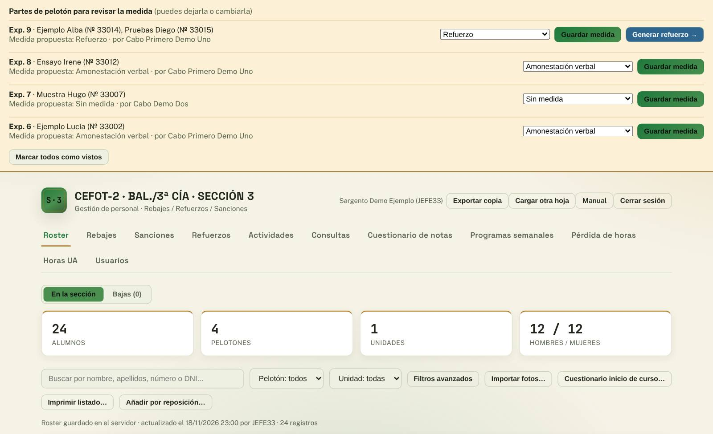
Pantalla principal del jefe de sección, con partes de pelotón pendientes de revisar.
Cabecera
Exportar copia: descarga un archivo con todos los datos de la sección (ver apartado ).
Cargar otra hoja: carga una hoja de cálculo nueva (.xlsx, .ods o .csv) y la fusiona con el roster: los alumnos que vienen en ella se actualizan y no se pierde nada (ver «Cargar otra hoja» en el apartado ). Afecta a todos los usuarios de la sección. Los rebajes, sanciones y refuerzos ya registrados no se pierden.
Cerrar sesión.
Pestañas
Roster · Rebajes · Sanciones · Refuerzos · Actividades · Consultas · Cuestionario de notas · Programas semanales · Pérdida de horas · Horas UA · Usuarios.
Avisos de partes de pelotón
Cuando un jefe de pelotón da de alta un parte, aparece arriba una franja amarilla con el expediente, el alumno, la medida propuesta y quién lo puso.
Revisa la medida en el desplegable. Puedes dejarla o cambiarla.
Pulsa Guardar medida: la medida queda fijada en el parte y el aviso desaparece.
Marcar todos como vistos retira los avisos sin cambiar ninguna medida, salvo los partes con arresto: esos solo se retiran al validarlos con Guardar medida.
Si guardas un parte con la medida Arresto, se envía al capitán de la compañía para su curso administrativo (apartado ). El propio aviso lo indica.
Roster (alumnos)
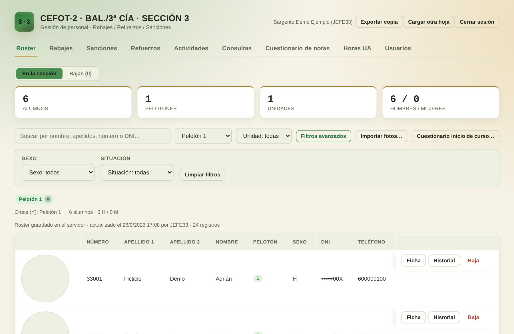
Roster con los filtros avanzados abiertos y el pelotón 1 seleccionado.
Consultar y filtrar
En la sección / Bajas: cambia entre los alumnos en activo y los dados de baja.
Los cuadros superiores (alumnos, pelotones, unidades, hombres/mujeres) cuentan solo lo filtrado.
Filtros: búsqueda libre (nombre, apellidos, número o DNI), pelotón, unidad y, en Filtros avanzados, sexo y situación (con rebaje vigente, sin rebaje vigente, con sanción, por reposición). Todos los filtros se cumplen a la vez.
Acciones por alumno
Ficha: datos del alumno, foto (Hacer foto con la cámara o Subir foto), resumen de rebajes, sanciones y refuerzos, alerta por reincidencia, archivos adjuntos (PDF o imagen) y, si lo ha rellenado, sus respuestas del cuestionario de inicio de curso.
Historial: todos los rebajes, sanciones y refuerzos del alumno.
Baja: pasa al alumno a la lista de bajas sin borrar nada. Desde Bajas se puede Reincorporar tal como estaba.
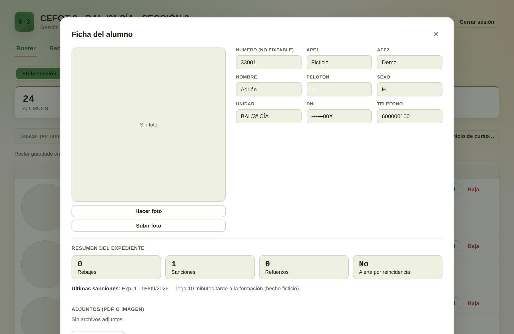
Ficha del alumno.
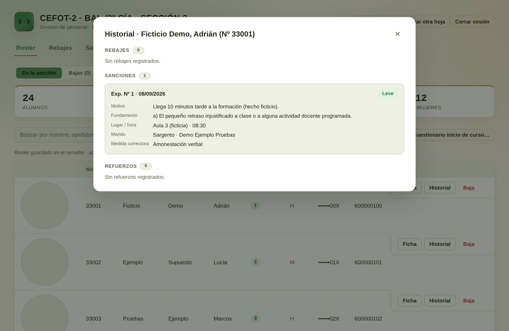
Historial del alumno.
Otras herramientas
Importar fotos…: carga varias fotos a la vez. Cada archivo se asigna al alumno cuyo número coincide con el nombre del archivo (por ejemplo 33001.jpg) o, si no, por apellidos y nombre. Al terminar muestra las que no ha podido asignar.
Cuestionario inicio de curso…: carga las respuestas del formulario de Google que los alumnos rellenan con su código QR y las adjunta a su ficha (ver más abajo).
Imprimir listado…: imprime lo que se ve en el Roster, con las columnas que elijas (ver más abajo).
Añadir por reposición…: añade alumnos que se incorporan con el curso empezado, sin cambiar lo ya cargado (ver más abajo).
Imprimir el listado
Filtra el Roster si solo quieres una parte (por ejemplo, un pelotón): se imprime lo que se ve.
Pulsa Imprimir listado…. La ventana indica cuántos alumnos salen y con qué filtros.
Marca las columnas que quieres en el papel (la foto incluida). Todas y Ninguna marcan o desmarcan de golpe; la elección se recuerda para la próxima vez.
Pulsa Imprimir: se abre el cuadro de impresión del navegador (papel o PDF). El listado lleva la cabecera de la unidad.
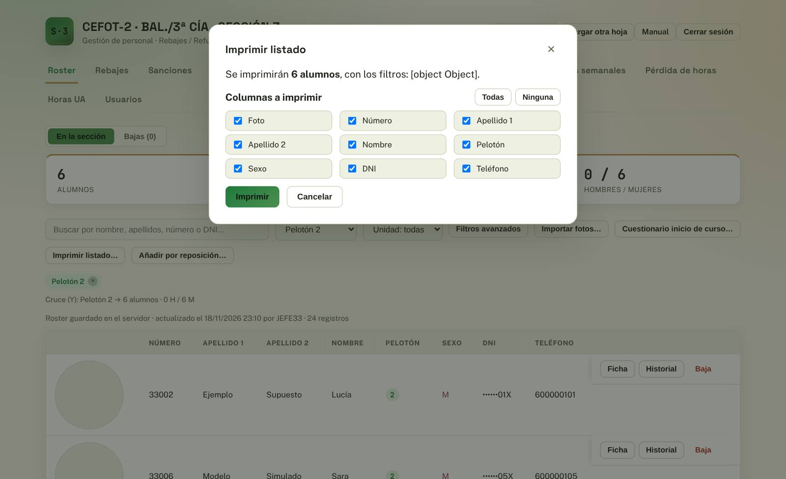
Imprimir listado: alumnos que salen y columnas.
Añadir alumnos por reposición
Para alumnos que se incorporan con el curso empezado. Solo añade: no cambia ni borra nada de lo ya cargado.
Pulsa Añadir por reposición… y, en la ventana, Elegir Excel…. La hoja debe tener las mismas columnas que el listado (al menos el número); la ventana indica qué columnas coinciden.
Indica la fecha de reposición (la de incorporación, que no tiene por qué ser la de hoy) y, si quieres, unas observaciones.
Revisa la tabla Qué pasará: cada fila dice si se añade o si se salta porque el número ya está en la sección, en Bajas, está repetido o falta.
Pulsa Añadir. Los alumnos añadidos llevan en el Roster la marca Reposición con su fecha; se ven todos con el filtro de situación Por reposición y con la consulta Reposiciones (apartado ).
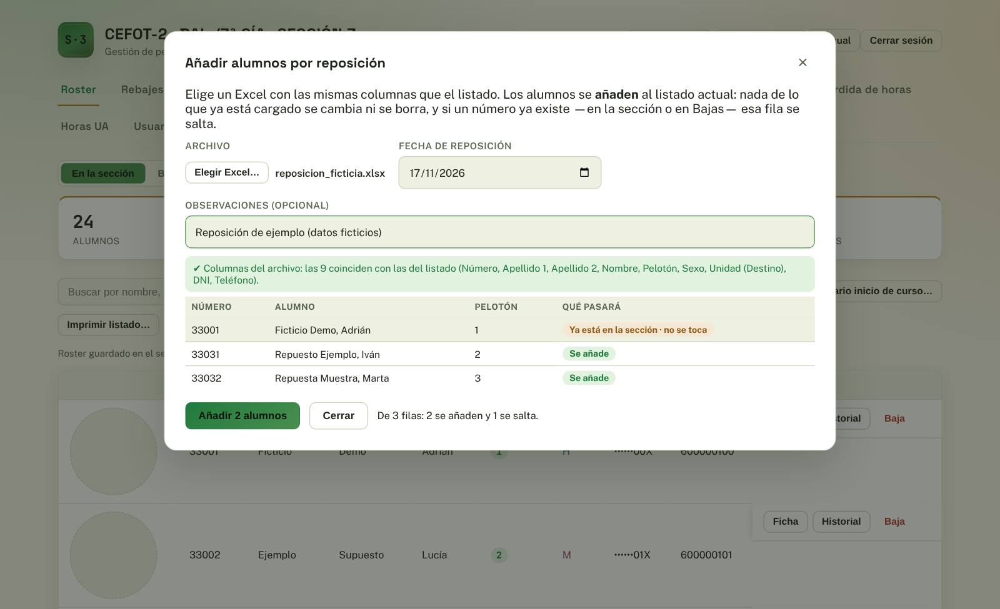
Añadir por reposición: fecha, observaciones y qué pasará con cada fila.
Cuestionario de inicio de curso (código QR)
El formulario de la ficha personal ya está creado en Google Forms. Los alumnos lo rellenan con el móvil escaneando su código QR; no hay que enviarles nada.
Cuando haya respuestas, en Google Forms: pestaña «Respuestas» → «Ver en Hojas de cálculo» → Archivo → Descargar → Microsoft Excel (.xlsx).
En el Roster pulsa Cuestionario inicio de curso… y Cargar hoja de respuestas…. El archivo (.xlsx, .ods o .csv) debe tener la pregunta «Número de protocolo»: cada respuesta se adjunta a la ficha de su alumno por ese número.
El resultado indica cuántas respuestas son nuevas, cuáles no se han podido adjuntar (número que no está en el listado, alumno de baja o sin número) y cuántos alumnos faltan por rellenarlo. Debajo, la lista de alumnos: Pendientes, Hechos o Todos.
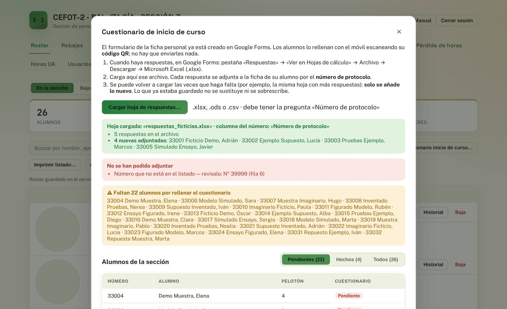
Cuestionario de inicio de curso: resultado de cargar la hoja de respuestas.
Se puede volver a cargar la hoja las veces que haga falta (por ejemplo, la misma hoja con más respuestas): solo se añade lo nuevo. Lo que ya estaba guardado no se sustituye ni se sobrescribe.
Cargar otra hoja
Cargar otra hoja (en la cabecera) sirve para actualizar el roster con un listado nuevo. Al aceptar el aviso, elige el archivo y pulsa Cargar. No se pierde nada:
Los alumnos que vienen en la hoja se actualizan con sus datos y conservan su foto, sus archivos, su cuestionario y su reposición.
Los que no vienen en la hoja se mantienen en la sección. Si alguno ya no está, dale de Baja.
Las bajas siguen en Bajas, aunque vengan en la hoja (para devolver a alguien a la sección, Reincorporar).
Rebajes, sanciones, refuerzos y actividades no se tocan.
Al terminar, un resumen indica cuántos alumnos se han actualizado, cuántos son nuevos, cuántos se mantienen sin venir en la hoja y cuántas bajas se conservan.
Rebajes
Escribe el número, apellidos o nombre del alumno y selecciónalo de la lista; el resto de sus datos se rellena solo.
Indica Fecha inicio y Fecha fin (la de fin no puede ser anterior).
Marca las actividades de las que queda exento: IFM, ejercicio físico, marchas, orden de combate, orden cerrado, maniobras, guardia de orden, instrucción nocturna, armas, formaciones y cama. Rebaje total / clase exime de todas y las marca automáticamente, salvo la cama, que va aparte y se elige a mano.
Pulsa Guardar rebaje. Limpiar formulario lo vacía.
Debajo aparece el listado de rebajes, con búsqueda, filtro por pelotón y por estado (vigentes, programados o finalizados), y el botón Eliminar en cada uno.
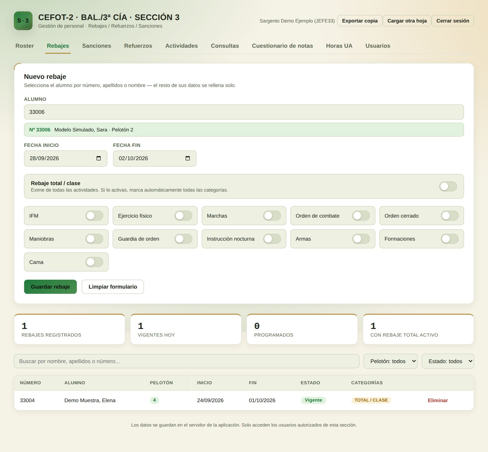
Nuevo rebaje con dos categorías marcadas.
Sanciones
.1 Dar de alta un parte
Alumno(s): Individual para uno o Múltiple para varios en el mismo expediente (máximo 25). Selecciónalos de la lista.
Opcional: Vincular a un expediente ya cursado para añadir la falta a un expediente existente en lugar de abrir uno nuevo.
Día, lugar y hora; tipo de falta (leve o grave) y, si se quiere, la fase (FFMG o FFE).
Datos del profesor que da el parte: empleo (CAP, TTE, BG, SGT1, SGTO), nombre, apellidos y DNI.
Fundamento legal: se elige de la lista, que cambia según el tipo de falta.
Motivo: descripción de los hechos. Son obligatorios el alumno, la fecha, el tipo de falta, el fundamento y el motivo.
Medida correctora (ver .2) y observaciones, si hacen falta.
Pulsa Guardar sanción y pasa el dispositivo al alumno para que firme con el dedo (o con el ratón). En un parte múltiple firma cada alumno por turno. Sin la firma de todos no se guarda el parte.
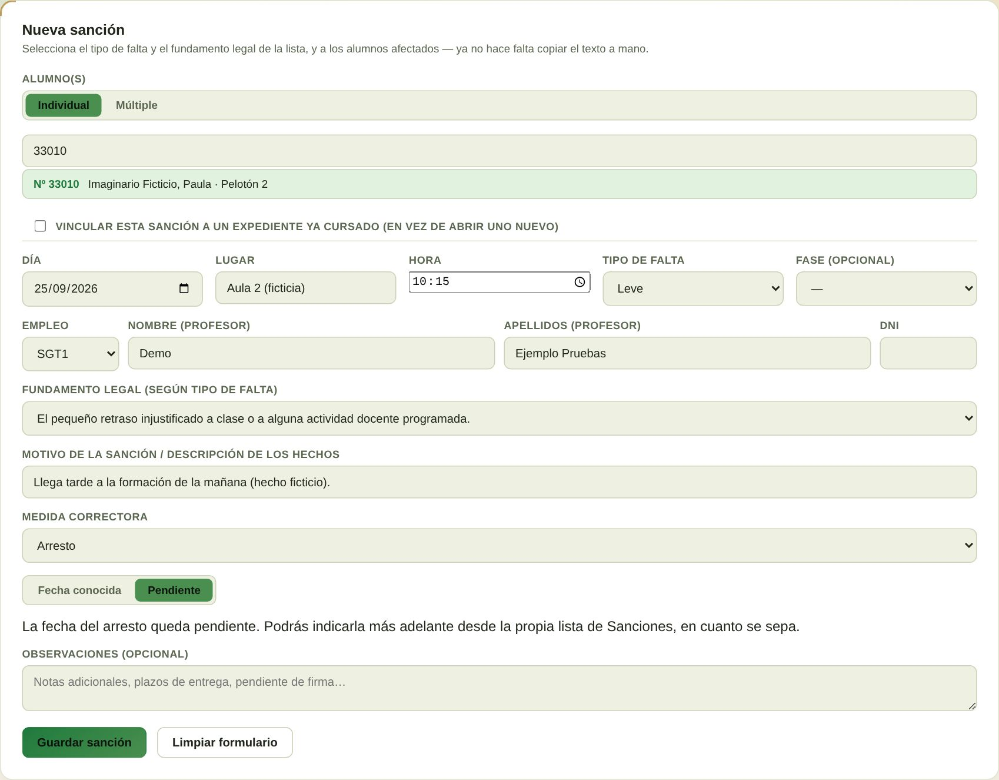
Formulario de sanción con medida «Arresto» y fecha pendiente.
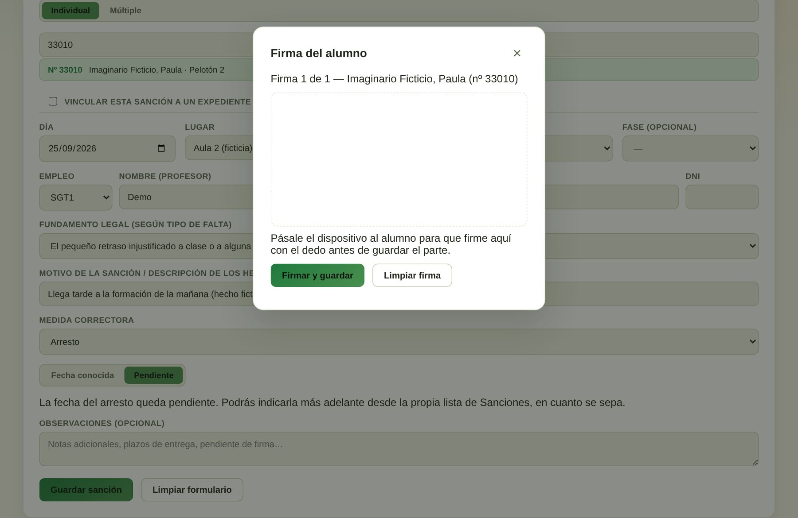
Firma obligatoria del alumno antes de guardar.
.2 Medidas correctoras
Medida
Qué hay que hacer
Amonestación verbal
En el listado, Documento genera el PDF «Amonestaciones Verbales» con la firma del alumno.
Trabajo no superior a 5 horas
Indica la fecha límite. Cuando el alumno lo entregue, marca Hecho en el listado (o desde Consultas). Si pasa la fecha sin marcarlo, aparece un aviso de trabajo vencido.
Refuerzo
En el listado, Generar refuerzo abre la pestaña Refuerzos con los datos del parte ya rellenados; solo faltan lugar, hora y duración.
Arresto
Fecha conocida: inicio y fin (los días se calculan solos). Pendiente: se guarda sin fecha y se fija después en el listado con Fijar fecha. Al guardarlo, o al validar el de un jefe de pelotón, se envía al capitán para su curso administrativo.
Sin medida
Solo queda registrado el parte.
Coincidencia de fechas. Si un arresto o refuerzo se solapa con otro ya fechado del mismo alumno, la aplicación lo avisa (un arresto y un refuerzo de estudio o IFM sí pueden coincidir: se complementan) y abre un calendario por alumno con los días ocupados en rojo y tachados. Quien choque recibe un expediente propio con las nuevas fechas; los demás siguen en el original.
.3 Listado de sanciones
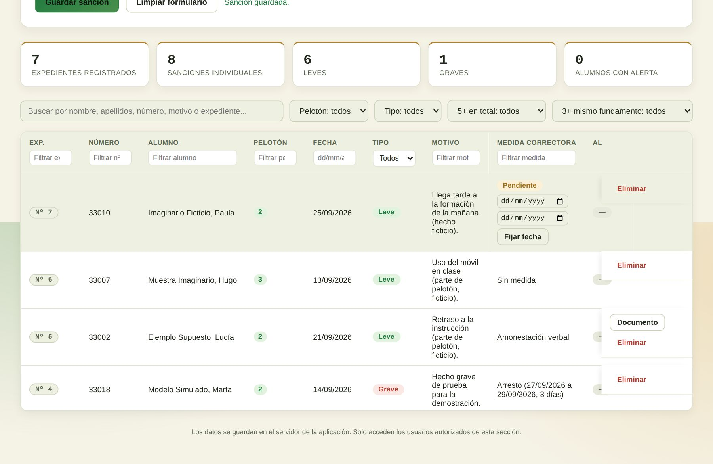
Listado: cuadros resumen, filtros y acciones de cada expediente.
Cuadros: expedientes registrados, sanciones individuales, leves, graves y alumnos con alerta.
Filtros: búsqueda, pelotón, tipo y dos alertas de reincidencia: 5 o más sanciones en total y 3 o más con el mismo fundamento. Cada columna tiene además su propio filtro.
Acciones según la medida: Documento, Generar refuerzo, Fijar fecha, Hecho y Eliminar (quita solo a ese alumno, también de su refuerzo derivado; si su documento ya se generó, sale ⚠ REGENERAR).
Los arrestos muestran su situación ante el capitán: Enviado al capitán o Tramitado por el capitán. Cambia sola cuando el capitán lo tramita.
Refuerzos
Sesión de refuerzo (IFM, estudio o entreno), voluntaria o derivada de una sanción.
Alumno(s) (Individual o Múltiple), fecha de inicio y fin, tipo, hora de inicio y duración.
Si el periodo incluye sábado o domingo, indica su horario propio.
Datos del documento (ANEXO): día, lugar y hora de los hechos, profesor, tipo de falta, fundamento, motivo, trámite de audiencia (día y hora), jefe de compañía que firma y lugar y fecha de la resolución. Si el refuerzo viene de una sanción, se rellenan solos.
Pulsa Guardar refuerzo.
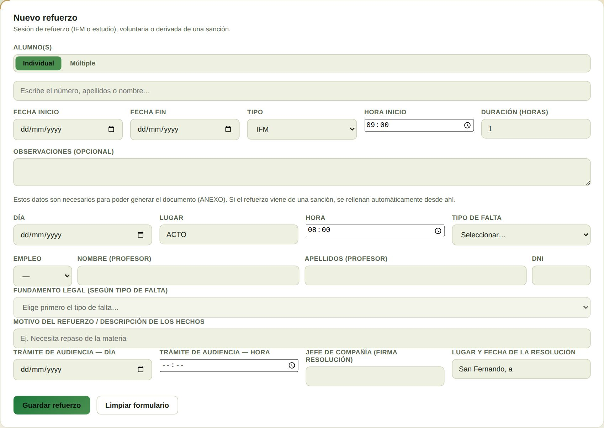
Nuevo refuerzo.
En el listado (filtros por pelotón, tipo y origen manual / de sanción) cada refuerzo tiene Editar y Rellenar documento (ANEXO sin límite de alumnos: pasados 25 añade hojas). Los alumnos se quitan en Sanciones, también los de refuerzos manuales.
Actividades
Registra quién ha participado en cada marcha, tiro, examen o conferencia del ciclo. Cada fase tiene sus propias actividades.
Elige la fase: FFMG o FFE. La primera vez se carga un catálogo estándar, que puedes modificar.
Para una actividad nueva escribe su nombre y, si quieres, la fecha, y pulsa Añadir actividad.
Pulsa el botón N participantes de la actividad, marca a los alumnos que han participado y guarda.
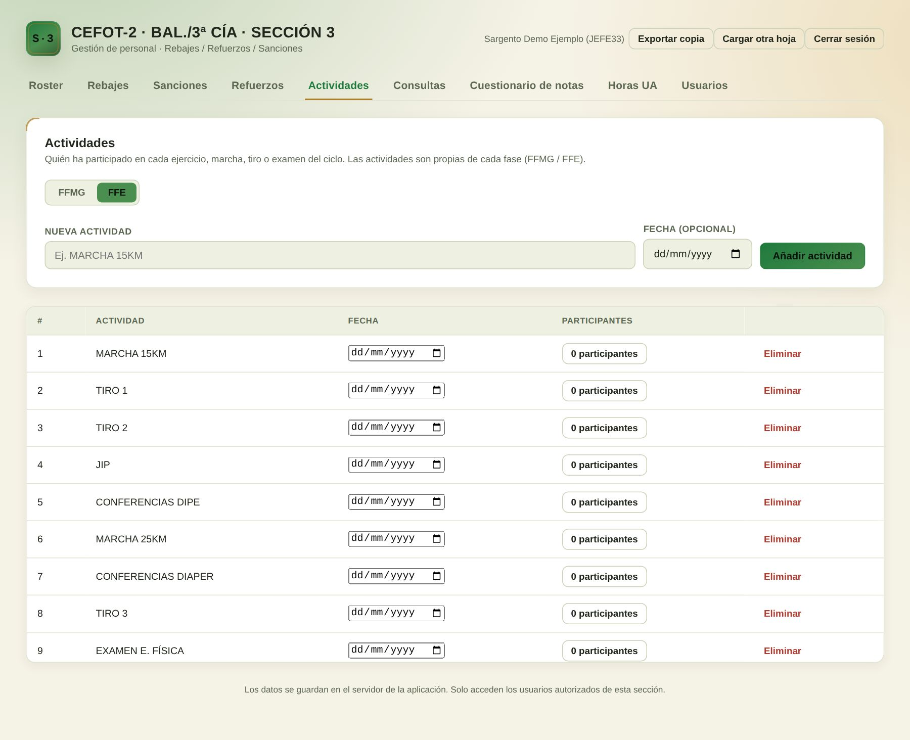
Actividades de la fase FFMG.
Consultas
Elige el tipo de consulta, rellena sus datos (fechas, actividad, alumno o expediente) y pulsa Consultar. Imprimir saca el resultado en papel o PDF.
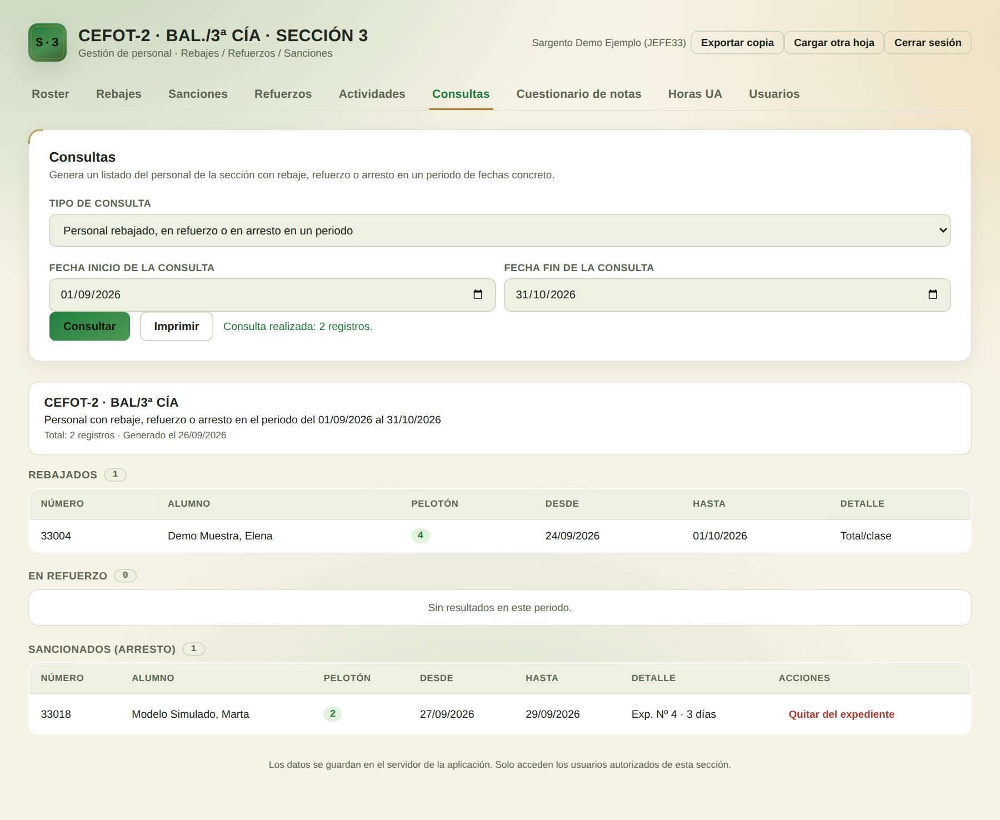
Personal rebajado, en refuerzo o en arresto en un periodo.
Tipo de consulta
Qué obtienes
Personal rebajado, en refuerzo o en arresto en un periodo
Tres listas (rebajados, en refuerzo y arrestados) entre dos fechas.
Personal que ha participado en una actividad
Por actividad o por alumno, dentro de una fase.
Sanciones de arresto con fecha pendiente
Arrestos a los que falta fijar fecha.
Sanciones de trabajo: hechos, pendientes y vencidos
Estado de los trabajos; se pueden marcar como hechos.
Consulta de expediente (informe completo)
Todo lo registrado con un número de expediente («4» y «004» son el mismo).
Hoja de seguimiento del alumno
Sus sanciones: marca las que figuran y edita las observaciones (se guarda). Indica el Ciclo; saca el PDF editable o imprime.
Reposiciones: alumnos añadidos y su fecha de reposición
Los alumnos añadidos por reposición, con su fecha. Las fechas son opcionales y cuentan la fecha de reposición, no el día en que se cargó el Excel; sin fechas salen todos.
Cuestionario de notas
Herramienta puntual para ver qué alumnos no alcanzan la nota mínima de un examen o control.
Añadir hoja o CSV… con las notas (puedes añadir varios archivos).
En cada archivo elige la columna de la nota y escribe la nota mínima.
Pulsa Comprobar. Si procede, marca alumnos y pulsa Sancionar seleccionados.
Nada de lo que subas en esta pestaña se guarda en el servidor.
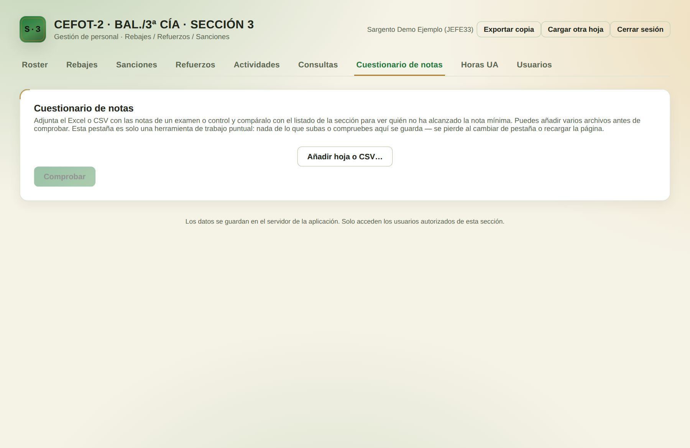
Cuestionario de notas.
Horas UA
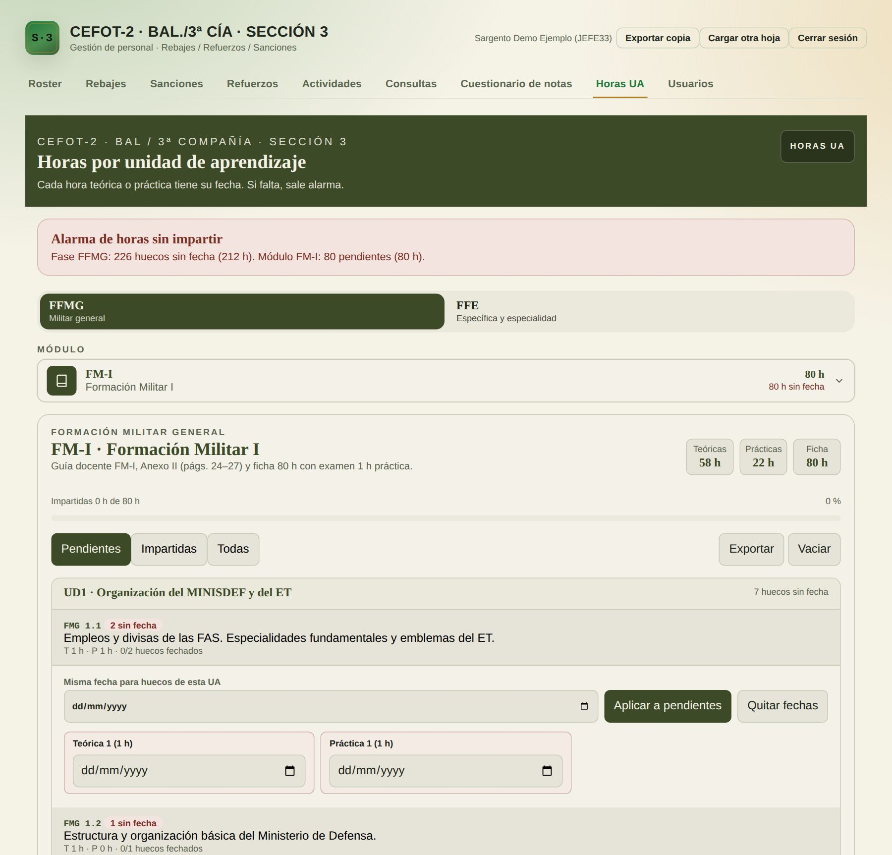
Horas por unidad de aprendizaje, con la alarma de horas sin fecha.
Elige la fase (FFMG o FFE) y el módulo.
Despliega una unidad de aprendizaje: cada hora teórica (T) o práctica (P) tiene su casilla de fecha. Misma fecha para huecos de esta UA rellena todas de una vez.
La alarma indica cuántas horas quedan sin fecha. Filtra por pendientes, impartidas o todas; Exportar descarga el estado y Vaciar borra las fechas.
Programas semanales y pérdida de horas
.1 Programas semanales
Se carga el programa de cada semana (hoja de cálculo Excel, .xlsx) y la aplicación lee en qué días y franjas tiene IFM la sección.
Abre la pestaña Programas semanales y pulsa Elegir archivos…, o arrastra los archivos al recuadro. Se pueden cargar varias semanas a la vez.
La semana se toma del nombre del archivo o del título del programa (por ejemplo, «16AL20NOV26» o «DEL 16 AL 20 DE NOVIEMBRE DE 2026»). El programa debe tener la columna HORARIO, los días a su izquierda (L-16, M-17…) y una columna por sección (I SC, II SC…).
Revisa el resumen: semanas cargadas, periodo y horas de IFM de la sección.
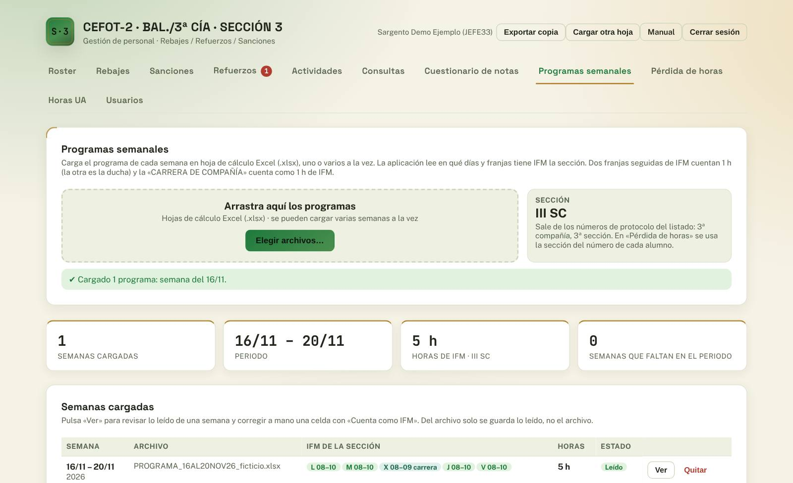
Programa semanal cargado y resumen de horas de IFM.
Cómo cuenta la IFM: dos franjas seguidas de IFM cuentan 1 h (la otra es la ducha) y la «CARRERA DE COMPAÑÍA» cuenta como 1 h de IFM.
En Semanas cargadas, Ver muestra lo leído de esa semana; si una celda está mal clasificada, se corrige a mano con Cuenta como IFM. Quitar borra la semana (se puede volver a cargar).
Si ya hay un programa de esa semana, pregunta antes de sustituirlo. Del archivo solo se guarda lo leído, no el archivo.
.2 Pérdida de horas
Calcula las horas de IFM y las actividades que un alumno ha perdido en un periodo. Necesita los programas semanales cargados.
Abre la pestaña Pérdida de horas y elige al alumno. Su sección sale del 2º dígito de su número.
Las fechas Desde y Hasta se rellenan con las semanas cargadas; cámbialas si quieres otro periodo.
En Categorías de rebaje salen las de sus rebajes del periodo: marca las que hacen perder la IFM. Cada una indica cuántas horas resta; un día que caiga en dos categorías marcadas se resta una vez.
El resultado muestra las horas de IFM programadas (incluida la carrera de compañía), realizadas y no realizadas, y las actividades del periodo (de la pestaña Actividades) con su estado: sale de la lista de participantes y, si no hay lista, de los rebajes marcados. Debajo, un calendario de cada semana con lo realizado y lo no realizado. Imprimir saca el informe.
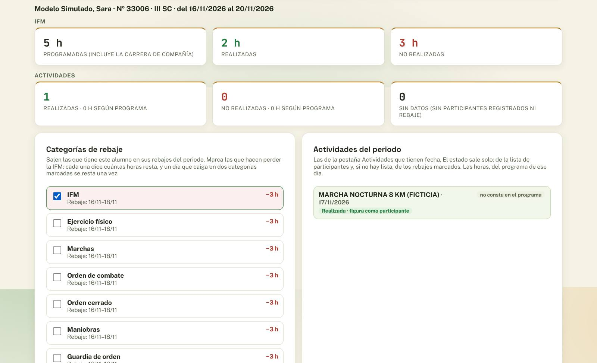
Pérdida de horas de un alumno con rebaje total, con la IFM marcada como categoría que se pierde.
Usuarios y cierre de curso
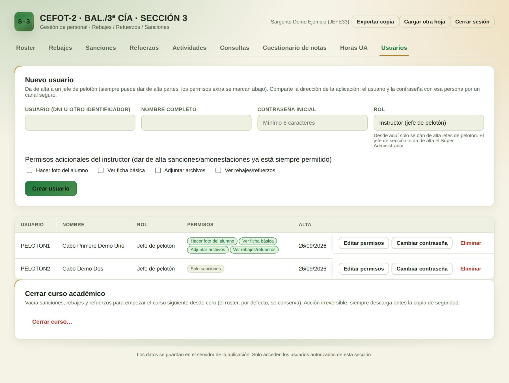
Alta de jefes de pelotón, permisos y cierre de curso.
Dar de alta un jefe de pelotón
Rellena Usuario (DNI u otro identificador, sin espacios), Nombre completo y Contraseña inicial (mínimo 6 caracteres).
Marca los permisos extra que necesite y pulsa Crear usuario.
Comunícale la dirección, su usuario y su contraseña por un canal seguro.
Permiso
Qué le permite (además de dar de alta partes, que siempre puede)
Hacer foto del alumno
Hacer o subir la foto desde la ficha del alumno.
Ver ficha básica
Ver sexo, DNI, teléfono y unidad del alumno.
Adjuntar archivos
Añadir PDF o imágenes a la ficha y borrar los suyos.
Ver rebajes/refuerzos
Consultar (sin modificar) los rebajes y refuerzos vigentes.
En el listado: Editar permisos (el cambio vale al momento), Cambiar contraseña y Eliminar (pierde el acceso inmediatamente).
Cerrar curso académico
Cerrar curso… vacía las sanciones, rebajes y refuerzos de la sección y reinicia la numeración de expedientes. El roster se conserva, salvo que marques lo contrario. Para confirmar hay que descargar antes la copia y escribir CERRAR CURSO.
Es irreversible. Guarda la copia en un lugar seguro: contiene datos personales.
Exportar copia al HTML local
Mientras el servidor no sea accesible desde la intranet, los datos del servidor se pueden pasar a la versión local de la aplicación (el archivo seccion3.html, que se abre con doble clic):
En el servidor pulsa Exportar copia. Se descarga un archivo con nombre CEFOT2_copia_3-3_2026-09-26.json (compañía-sección y fecha).
Lleva el archivo al ordenador de la intranet.
En el HTML local pulsa Importar copia del servidor (añadir)… y elige el archivo.
Se muestra un resumen de lo que es nuevo y de lo que ya existía. Al aceptar, solo se añade lo que falta: nunca se sustituye ni se borra nada.
La copia lleva el roster, las bajas, las sanciones, los rebajes, los refuerzos, las actividades, las fechas de Horas UA, las hojas de seguimiento y los programas semanales.
Situación
Qué hace el HTML local
Importar dos veces la misma copia
La segunda vez no añade nada: no se duplican registros.
Un parte del servidor trae un nº de expediente que en local ya usa otro parte
Lo añade igualmente y avisa de los números repetidos para revisarlos.
Un registro ya importado se modifica después en el servidor
El cambio no llega (nunca se sobrescribe): hay que corregirlo a mano en local.
Un programa semanal de una semana que en local ya está cargada
Se deja el de local; no se duplica la semana.
Copia completa del Súper Administrador
Pregunta qué sección importar y la añade del mismo modo.
PARTE II · JEFE DE PELOTÓN
Dar de alta un parte
Al entrar se abre Nueva sanción. El jefe de pelotón solo da de alta partes: no ve el listado de sanciones ni el roster completo. Está pensada para usarse desde el móvil.
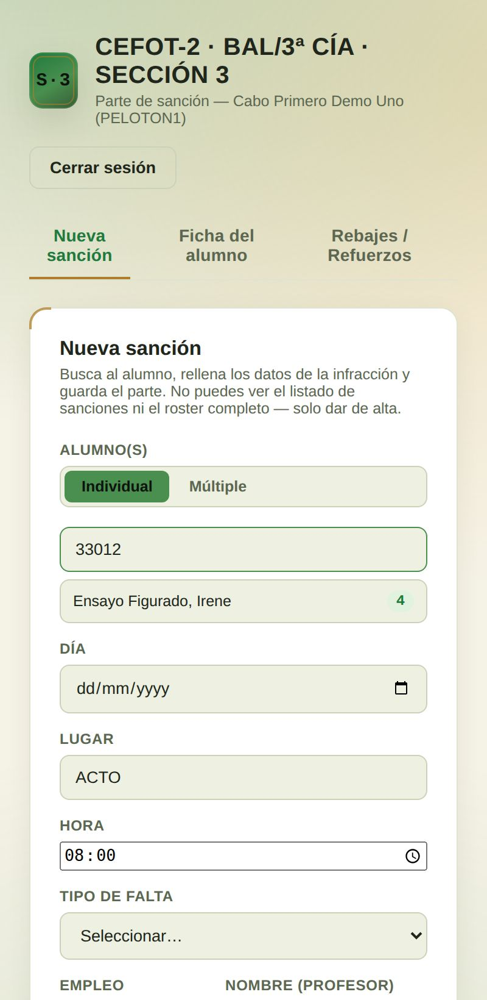
Buscar al alumno y pulsarlo en la lista.
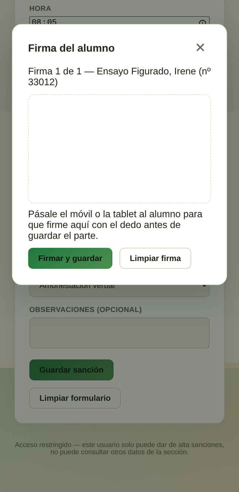
Firma del alumno antes de guardar.
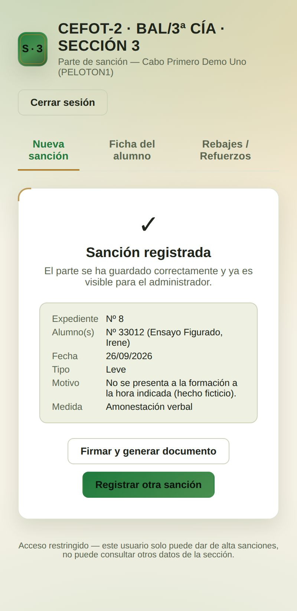
Parte registrado.
Alumno(s): Individual o Múltiple. Escribe número, apellidos o nombre y pulsa al alumno en la lista que aparece (figura ). Si te equivocas, Cambiar.
Día, lugar y hora y tipo de falta (leve o grave).
Datos del profesor: empleo, nombre, apellidos y DNI.
Fundamento legal (de la lista, según el tipo de falta) y motivo (descripción de los hechos).
Medida correctora que propones: amonestación verbal, trabajo no superior a 5 horas (con fecha límite), refuerzo, arresto (con fechas de inicio y fin) o sin medida.
Pulsa Guardar sanción, pasa el móvil al alumno para que firme con el dedo y pulsa Firmar y guardar (figura ). En un parte múltiple, Firmar y continuar pasa al siguiente alumno. Sin firma no se guarda.
Aparece el resumen con el número de expediente (figura ). Si la medida es amonestación verbal, Firmar y generar documento produce el PDF firmado. Registrar otra sanción deja el formulario en blanco.
¿Qué pasa después? El parte llega al momento al jefe de sección como aviso (apartado ). Él confirma o cambia la medida propuesta y gestiona el resto (fechas, documentos, refuerzos).
Ficha del alumno y rebajes/refuerzos
Estas pestañas solo aparecen si el jefe de sección te ha dado el permiso correspondiente (apartado ). Los permisos se comprueban en cada acción: si te retiran uno, deja de funcionar al momento.
Ficha del alumno: busca al alumno para ver sus datos básicos (si tienes Ver ficha básica), hacer o subir su foto (Hacer foto) y añadir archivos PDF o imágenes (Adjuntar archivos).
Rebajes / Refuerzos: consulta, sin poder modificar, los rebajes y refuerzos vigentes (Ver rebajes/refuerzos).
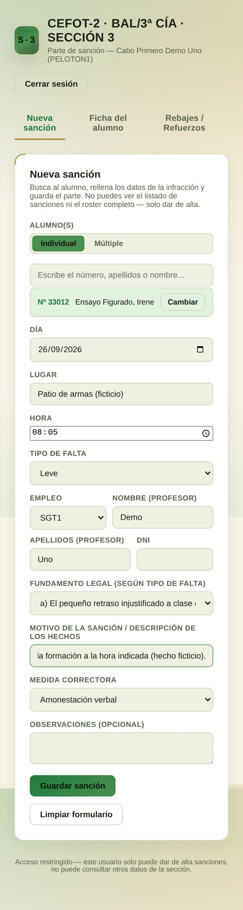
Parte completo antes de guardar.
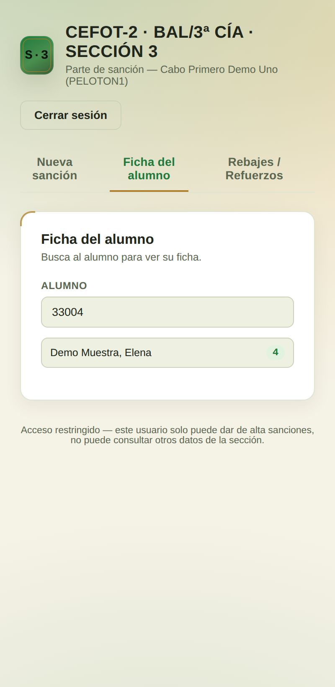
Ficha del alumno.
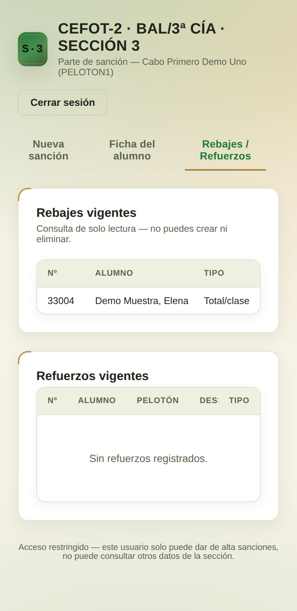
Rebajes y refuerzos vigentes.
PARTE III · CAPITÁN DE COMPAÑÍA
El capitán no tiene sección propia: supervisa las cinco secciones de su compañía y puede entrar en cualquiera de ellas para trabajar como su jefe de sección. No puede entrar en secciones de otras compañías.
Entrar en una sección de la compañía
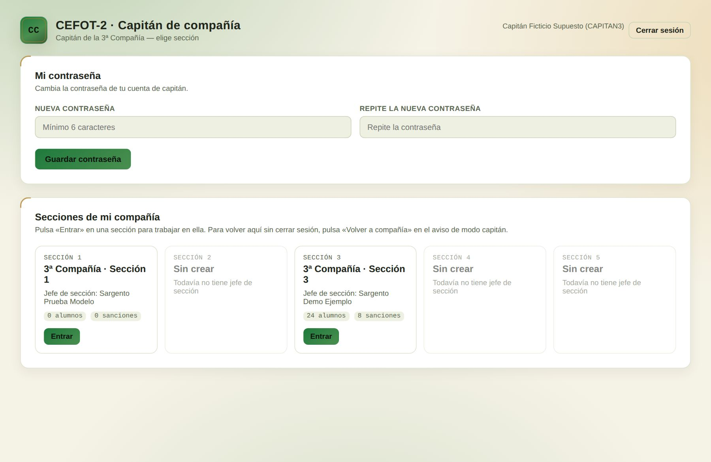
Pantalla del capitán: su contraseña y las secciones de su compañía.
Entra con tu usuario y contraseña: se abre la pantalla Capitán de compañía.
En Secciones de mi compañía aparecen las cinco secciones. Las creadas muestran su jefe de sección y cuántos alumnos y sanciones tienen; las apagadas están sin crear y no se puede entrar en ellas.
Pulsa Entrar en la sección que quieras. Se abre su pantalla de gestión con el aviso Modo capitán de compañía (figura ).
Para volver a tu pantalla principal sin cerrar la sesión, pulsa Volver a compañía en ese aviso. Desde ahí puedes entrar en otra sección.
En la misma pantalla, Mi contraseña permite cambiar tu contraseña: escríbela dos veces (mínimo 6 caracteres) y pulsa Guardar contraseña.
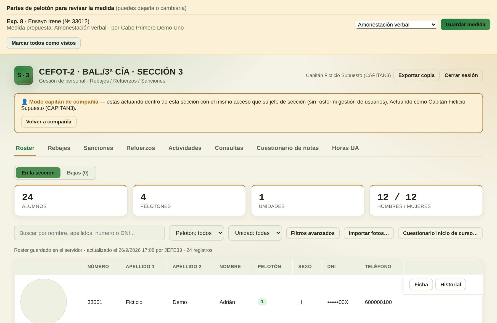
Dentro de la 3ª Sección en modo capitán: aviso con «Volver a compañía» y sin la pestaña Usuarios.
Arrestos para dar curso administrativo
Una sanción con medida Arresto llega al capitán de la compañía:
al guardarla, si la pone el jefe de sección (o el propio capitán dentro de una sección);
si la pone un jefe de pelotón, cuando el jefe de sección la ratifica con «Guardar medida». Si la cambia a otra medida, no llega (o se retira si aún no estaba tramitada).
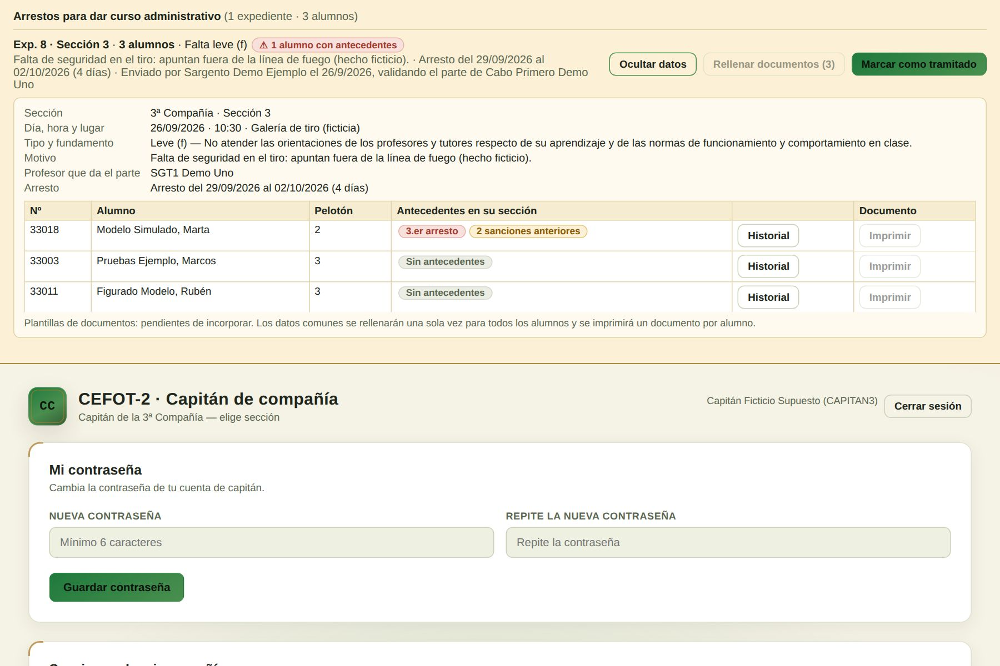
Ventana de arrestos del capitán con «Ver datos» abierto: el alumno 33018 está en su 3.er arresto.
Qué hace el capitán
Al entrar le aparece arriba la ventana «Arrestos para dar curso administrativo», con cada expediente, su sección, el motivo, las fechas del arresto y quién lo envió. Si algún alumno tiene antecedentes lo avisa: «⚠ 1 alumno con antecedentes».
Ver datos muestra todos los datos del parte y la lista de alumnos con sus antecedentes en su sección (qué número de arresto es y cuántas sanciones anteriores tiene).
Historial abre el historial completo del alumno: el mismo que ve su jefe de sección (sanciones, rebajes y refuerzos).
Marcar como tramitado le da curso: sale de la ventana y pasa al historial de arrestos. El jefe de sección ve el cambio en su listado.
Si el capitán está trabajando dentro de una sección, el aviso de modo capitán le recuerda cuántos arrestos tiene pendientes.
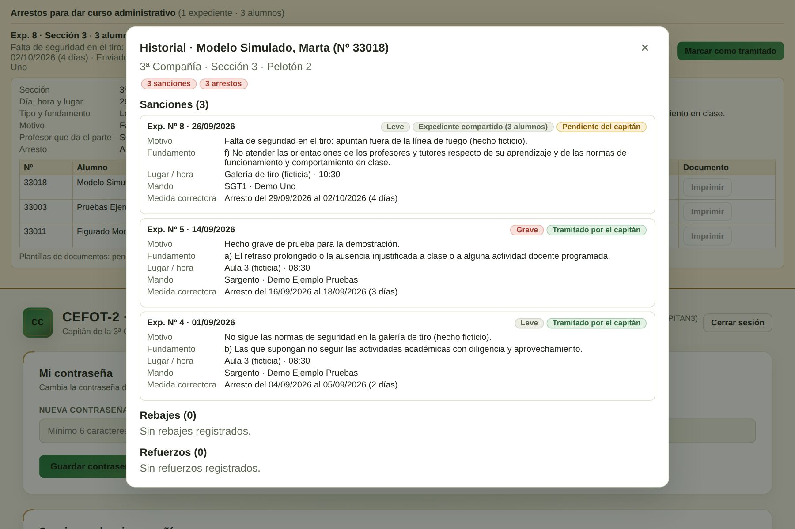
Historial del alumno visto por el capitán.
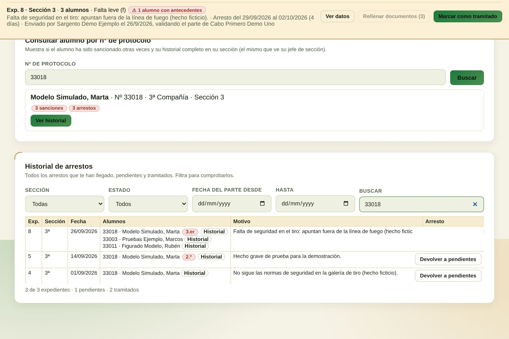
Historial de arrestos filtrado por un alumno.
Consultar un alumno por su nº de protocolo
En Consultar alumno por nº de protocolo, escribe el número y pulsa Buscar. Aparece el alumno, su sección, cuántas sanciones y arrestos tiene, y el botón Ver historial. Solo encuentra alumnos de las secciones de su compañía.
Historial de arrestos
Recoge todos los arrestos que le han llegado, pendientes y tramitados. Se filtra por sección, estado, fechas del parte y texto (alumno, nº de protocolo, expediente o motivo). Un arresto tramitado por error se puede Devolver a pendientes.
Plantillas de documentos. Los botones «Rellenar documentos» e «Imprimir» están preparados y se activarán cuando se incorporen las plantillas: los datos comunes se rellenarán una sola vez para todos los alumnos del expediente y se imprimirá un documento por alumno.
Cada arresto es una sola sanción, aunque la vean el jefe de pelotón, el jefe de sección, el capitán y el jefe de estudios: las estadísticas la cuentan una sola vez.
Qué puede y qué no puede hacer
Dentro de una sección, el capitán usa las mismas pantallas que el jefe de sección (Parte I).
Puede (igual que el jefe de sección)
No puede (le corresponde al jefe de sección)
Consultar el roster, la ficha y el historial de los alumnos.
Dar de alta, revisar y eliminar rebajes, sanciones y refuerzos, fijar fechas de arresto y generar documentos.
Revisar los avisos de partes de pelotón y fijar la medida.
Actividades, consultas, cuestionario de notas y horas UA.
Programas semanales, pérdida de horas y cargar las respuestas del cuestionario de inicio de curso.
Exportar la copia de la sección.
Dar curso administrativo a los arrestos de toda su compañía (apartado ).
Cambiar el roster: cargar otra hoja, añadir por reposición, dar de baja o reincorporar alumnos.
Dar de alta, modificar o eliminar jefes de pelotón (no ve la pestaña Usuarios).
Cerrar el curso académico.
Entrar en secciones de otra compañía.
En el documento de un refuerzo, el campo Jefe de Compañía (firma resolución) se rellena automáticamente con el nombre del capitán cuando es él quien lo prepara.
Todo lo que el capitán registra queda en la sección igual que si lo hubiera hecho su jefe de sección, y este lo ve al momento.
PARTE IV · JEFE DE ESTUDIOS
Estadísticas agregadas
El jefe de estudios consulta cifras de conjunto de todas las secciones para seguir la disciplina y detectar tendencias. No ve datos personales de los alumnos ni puede modificar nada.
Entra con tu usuario y contraseña: se abre Jefe de estudios.
Elige Compañía y Sección (o deja Todas) y pulsa Actualizar.
Bloque
Qué muestra
Cuadros superiores
Número de refuerzos, rebajes, arrestos y sanciones.
Sanciones por tipo y medida
Leves y graves, y cuántas hay de cada medida correctora.
Fundamentos legales
Cuántas veces se ha aplicado cada fundamento, con su tipo y letra.
Motivos agrupados
Los motivos escritos a mano, agrupando textos parecidos, con la columna Cómo se escribió para ver las variantes.
Por sección
Refuerzos, rebajes, arrestos y sanciones de cada sección, para comparar.
El jefe de estudios no cambia su contraseña desde su pantalla: si la olvida o quiere cambiarla, lo hace el Súper Administrador.
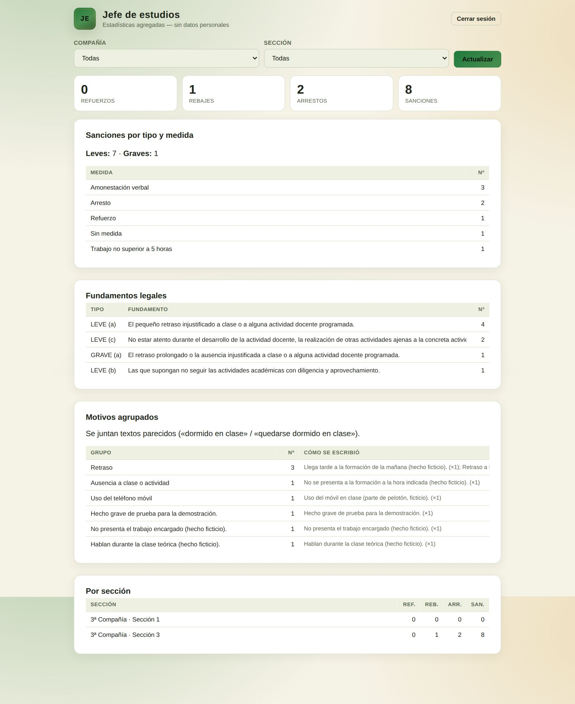
Estadísticas agregadas del jefe de estudios.
ANEXO
Problemas frecuentes
Problema
Solución
«Usuario o contraseña incorrectos»
Comprueba mayúsculas y que el usuario es el que te dieron. Si has olvidado la contraseña, pide una nueva a tu jefe de sección (o al Súper Administrador si eres jefe de sección).
«Demasiados intentos fallidos»
Espera los segundos que indica y vuelve a intentarlo.
Me echa de la aplicación o dice que no tengo acceso
La sesión dura 12 horas; vuelve a entrar. Si persiste, tu usuario puede haber sido dado de baja: consulta a tu jefe de sección.
El alumno no aparece al buscarlo
Prueba con el número o el primer apellido y pulsa el nombre en la lista. Si no está, puede estar dado de baja (Roster → Bajas) o faltar en el roster.
No me deja guardar el parte
Revisa los campos obligatorios (alumno, fecha, tipo de falta, fundamento y motivo) y que hayan firmado todos los alumnos.
No aparece la pestaña Ficha o Rebajes/Refuerzos (jefe de pelotón)
No tienes ese permiso; solicítalo a tu jefe de sección.
La foto no se hace con la cámara
Permite al navegador el uso de la cámara o utiliza Subir foto.
No se abre el PDF o el informe
Permite las ventanas emergentes para cefot.up.railway.app.
Un programa semanal no se carga
Lee el motivo que indica la pestaña: falta la columna «HORARIO» o las de sección (I SC, II SC…), o no aparecen las fechas de la semana ni en el nombre del archivo ni en el título.
Una respuesta del cuestionario no se adjunta
El número de protocolo que escribió el alumno no está en el listado (revísalo), el alumno está de baja o la respuesta no tiene número.
«Error de conexión»
Comprueba la conexión a Internet y vuelve a intentarlo. Recarga la página para ver si la operación llegó a guardarse antes de repetirla.
Buenas prácticas
No compartas tu usuario ni tu contraseña y cambia la contraseña inicial.
Cierra la sesión en equipos compartidos.
Las copias exportadas y los documentos impresos contienen datos personales: guárdalos con la misma custodia que el resto de la documentación de personal.
Ante cualquier duda sobre el funcionamiento, consulta al responsable de la aplicación.